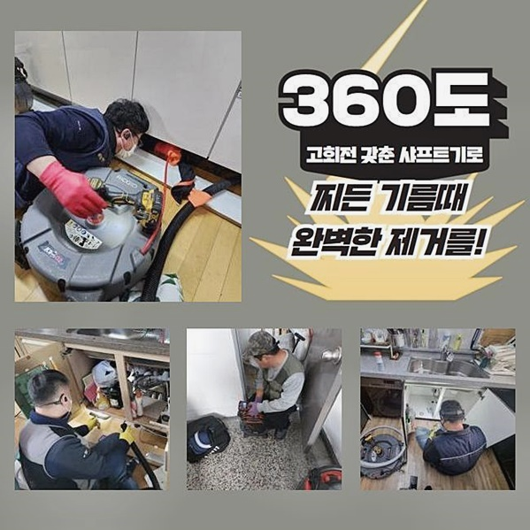
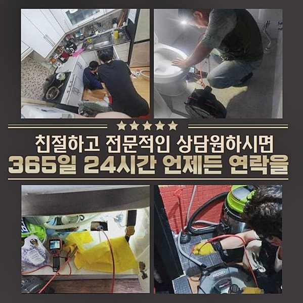
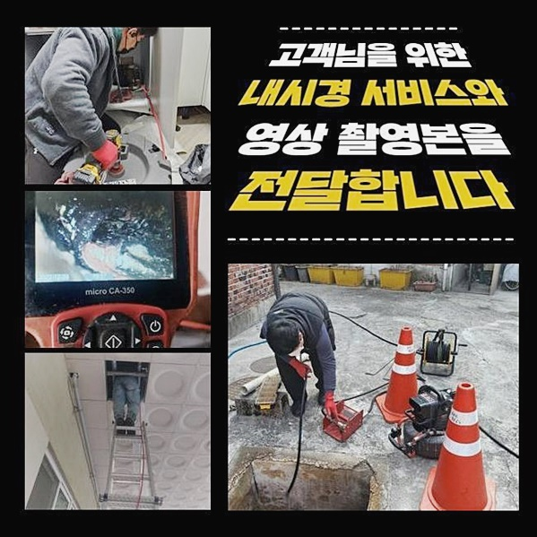
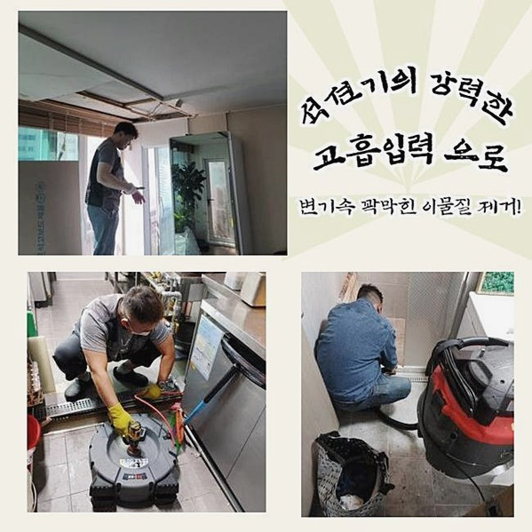
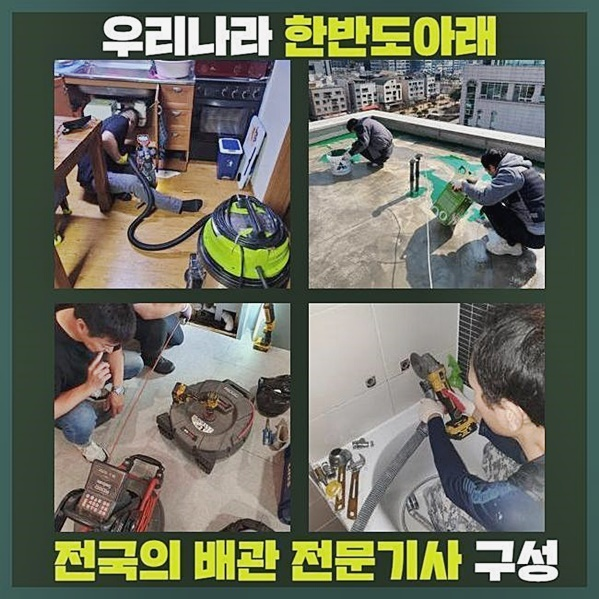
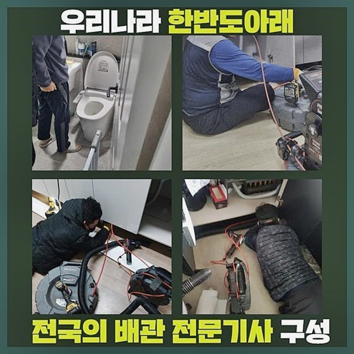

🏠 중구 서소문동변기막힘 남창동 집수정청소 설비
용인 변기막힘 전문 시공 후기

📋 작업 개요
- 위치: 용인
- 서비스 유형: 변기막힘, 하수구막힘, 배관막힘, 집수정막힘, 역류해결, 뚫는업체, 배관청소, 고압세척
- 작업 일시: 2024. 6. 8. 18:09
- 업체명: 하수구수사대 (010-5615-2118)
🔍 문제 상황
중구 서소문동변기막힘 남창동 집수정청소 설비
재발없이 막히는 문제들을 풀어내는 전문인이에요!
만약 체를 했다면 불편들이 상당할거에요
제 입장에선 체기가 올라올땐 기본적인것도 못할정도로 고통을 호소하죠 하수도도 똑같아요
하수구의 내부를 관찰하고 통수과정에 방해하는 요소들이 생겨나면 그 양에 상관없이 전반적인 메커니즘에 피해를 끼치죠
문의가 많았던 해결책! 이제부턴 막힘문제를 바로 잡은 과정들을 보시겠습니다
여러 증세에 예방책을 알고싶거나 문제들을 경험했던 경우라면 정독해보시고 알아가시면 되요!
배수장애를 고객이 비로소 인지한것은 욕실쪽이었습니다
하루하루 업무를 다 보고 목욕을 한다던가 청결하게 해야하는 공간이면서 손빨래들까지 수행가능한 공간이고 생활측면에서 밀접하다고 해줄수있는데요
이것은 장기간동안 흘러가질 않으면 여러 부분에서 좋지 못한 영향들을 끼치죠
배수들이 안되는 까닭에 세안까지 외부로 나가 수행되어야 하며 수돗물을 받은 다음 이용하신 상황으로 고충을 떨쳐내고 싶어하셨죠
배수관을 뚫기위한 첫째는 석션장비를 이용하는데요
아실 수도 있는 흡입장치죠 안측에 잔해물을 청소하는 기기로 간단한 문제들은 해당 기기로 해결이 되죠

🔎 원인 분석
💡 전문가 진단: 정밀 진단 장비를 사용하여 슬러지의 고착 여부를 판명하고 타격/세척 작업을 실시했습니다.
그러나 석회로 변하거나 단단함이 심할경우 샤프트장치로 바꿔줘야 해요
안에서 빼내어 바깥으로 배출된 양들을 보니 소량만 빠져나왔고 증세가 나아진건 아니여서 샤프트도구를 운용하기로 했어요
호스들이 둘러져있으며 헤드부분엔 이물 제거를 담당하는 체인뭉치의 부품이 있는 도구로 고착물 제거에 박차를 가했습니다
현장에따라 증세가 가지각색이고 증세마다 사용해야될 장치도 다르기때문에 작업에 임할때 빠트리지 않은채 챙겨서 찾아뵙죠
거주지의 배수관은 예상밖에 가늘고 기울기가 다양하게 형성된 모습이에요
곧게 뻗어있다고 생각하긴하나 장비가 없을 시 진단에 불편이 걸림돌이 되므로 꼭 필요하죠
샤프트기의 헤드쪽에 이어진 노즐부가 관로의 단단해진 잔여물들을 분쇄시킵니다
여러조각으로 탈락시키는 방법이라 단단한 잔해물도 수월하게 사라집니다
안정적이고 하수관복구 해결방법을 돕는 장치이죠
가구의 하수구를 포함해 메인배관까지 관찰했습니다
건축물의 중앙의 공용하수관에 이어져있고 증세가 집수부분으로 사라진데 해당 지점도 막힌것으로 보여서 추가의 과정들을 요했습니다
고객님의 의뢰의 경우 외부에 설치된 하수시설의 뚜껑들을 올리고 고객님과 상의하여 고압노즐을 준비하고 수리 단계를 수행했습니다
고압노즐은 물리력이 높은 압들이 요구되는 집수시설 및 석회물질이 상당히 침전되었을때 쓰여지는 기기인데요
비용들이 꽤 들기에 구비한 전문진을 물색하는게 어려운데요

🔧 작업 과정
중앙배관시설도 유사하게 내시경기기를 사용하여 내측을 살펴보았어요
고착물이 내측에 존재하는것을 보았죠
집수정에 출수부분부터 누적되어 시나브로 겹겹이 엉키다가 응집되면 서로서로 붙으면서 배수라인을 채웁니다
그렇기에 배수되어야하는 공간들이 확보되지 못해 막혀버리는 증상이 야기되는데요
또한 원인을 모른채로 막힘을 방임하면 역류문제도 야기시켜요
잔해물이 어마어마한 경우 강력한 물리력을 동반한 고압의 방법을 통한 이물제거를 진행하는게 중요해요
하수구의 슬러지들을 제거해주는 고압노즐 분사로 고착물과 벽면에 자리한 기름으로 이뤄진 이물질도 오차없이 없애주죠
힘이 상당하고 결과들은 완성도가 높겠지만 내식성이 떨어진 상태라거나 복잡한 결함이 있다면 면밀히 관찰하고 다음 스텝을 이어가야 수월하게 진행된답니다
즉각 해당 작업에 열을 올렸죠
저희의 전문가도 쉽지않았던 작업이였는데요
내시경장비로 살핀다음 오차는 없는가 체크하면서 수리하고 있으므로 우려하실 일은 없습니다
외측을 작업해주고 각각의 하수관과 집수설비도 세심하게 세척해주었어요
조금의 배수에 문제가 생겨도 하수관은 연속성을 띄기에 전반에걸쳐 불편들을 양산시키기에 신중히 해결만을 위해 시공절차에 집중하고 있어요
청소를 끝마치고 내시경카메라를 배수관으로 넣어주어 내부 모습을 관찰해주었어요
이물질들이 누적되어 하수배출까지도 보이지않던 공간이 트이게된 걸 목격했어요
이상적인 하수관이면 일정한 통로가 마련되야 통수 허용량이 정상적 선들을 유지하죠
끝까지 탈락되지않던 이물도 제거됐습니다
내시경기기로 진단하고 아까와같이 바깥부분으로 가서 이물이 빠진 형태를 구석구석 진찰한다음 끝 마무리과정에 착수해요
기름때가 녹여져있던 물들이 콸콸 빠지는 상황이죠
정리단계의 작업도 제대로 진행해주었어요
화장실에서 하수들을 배출시키니 시원하게 배수되는 모습을 보고 고객님에게 완료됐음을 알리게되었어요


✅ 작업 완료
배수관을 시정하는데에 장애나 불편들이 있다면 통수과정이 안되기에 스텝을 거쳐갈때 여러번 체크하죠
해결만 하는데에 집중을하고서 미래에 대처법에 관련한 부분까지 고객분께 알기 쉽게 일러드리고 있답니다
오늘 막힌 하수관을 고치는 것을 설명드렸습니다
저희는 증상완화에 심혈을 기울여 고쳐내는걸 보여드렸어요
문의하고 싶은것이 있다면 편하실 때 연락해보세요!
60분을 넘기지않고 문제의 장소까지 도착하고 있고 연락하셨을때 정성을 다해 의뢰인분을 맞고있으니 문의하시면 친절하게 답변해드릴게요




⚠️ 하수구 배관 막힘 예방 및 관리 가이드
- ✅ 머리카락, 비닐, 물티슈 등 물에 분해되지 않는 이물질은 하수구 유입을 절대 금지해 주세요.
- ✅ 하수구 거름망을 씌우고 모여진 이물질은 주기적으로 쓰레기통에 바로 비워주셔야 합니다.
- ✅ 배관 노후가 심할 경우 이물질이 더 쉽게 걸리므로 주기적인 배관 세척(고압세척 등)을 권장합니다.
- ✅ 작업 후 1년 이내 재발 시 하수구수사대에서 무상 A/S 보증 서비스를 제공합니다.
💡 핵심 정리
- 확실한 장비 작업(내시경 점검 및 샤프트 스케일링)으로 원인을 뿌리 뽑습니다.
- 작업 후 1년 이내에 동일한 부위 재발 시 100% 무상 A/S 서비스를 보장합니다.
- 서울 · 경기 · 인천 전 지역에 24시간 언제든 긴급 출동할 수 있도록 항시 대기 중입니다.
❓ 자주 묻는 질문 (FAQ)
🚨 용인 변기막힘 문제로 고민이신가요?
정확한 원인 진단과 확실한 시공으로 재발 없는 해결을 약속드립니다.
24시간 긴급 출동 | 서울 · 경기 · 인천 전지역 | 1년 내 재발 시 무상 A/S